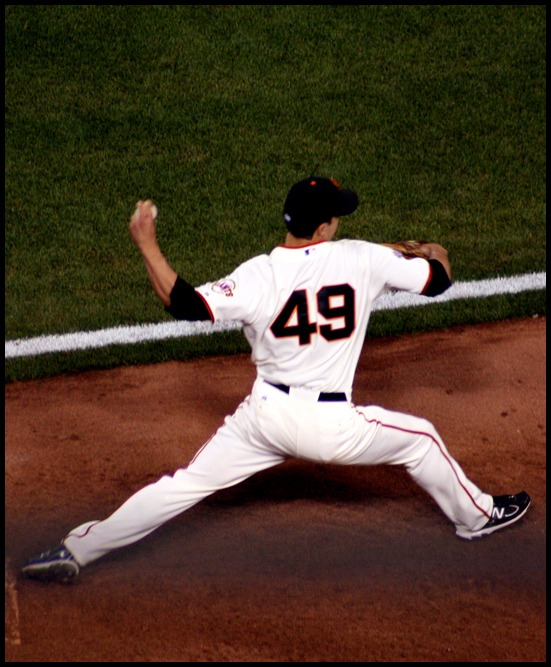

A's 2, Twins 0: Jacob Lopez Deals, Four Relievers Slam the Door
One hit allowed in five innings from the starter. One hit allowed in four innings from the bullpen. Two runs was all this offense needed for once, because for a single afternoon in Minneapolis, the pitching staff did not blink.

We have spent a lot of this season writing about Jacob Lopez pitching well and getting nothing for it. Two hits over four and a third against Washington, a loss. Traffic everywhere, no run support, another decision that read worse than the outing. So it is only fair to write it down when the opposite happens: Lopez walked four Twins on Saturday, which is not nothing, but he also allowed exactly one hit over five innings, struck out four, and this time his own team scored before he even needed the help. A's win 2-0. Somebody remembered how this is supposed to work.
The offense did not need much, and for once that was by design rather than a symptom. Lawrence Butler's fifth-inning sacrifice fly brought home Donovan Walton, who had reached on a walk and stolen his way into position, 1-0 A's. An inning later Tyler Soderstrom lined a single to left to score Henry Bolte, who had singled to start the frame, and that was the entire offensive output for the day: two runs, five hits, nothing flashy, more than enough. Jacob Wilson and Shea Langeliers were quiet at the plate, but on an afternoon when Zebby Matthews was mixing his stuff well for Minnesota, two runs off him over six innings is a perfectly good day's work.
What actually decided this game was what happened after Lopez left. Geoff Hartlieb worked around three walks in a third of an inning without letting a run score, and then Jose Suarez, Elvis Alvarado and Hogan Harris combined to finish it off, four relievers, four innings, one hit allowed the entire way. Harris struck out the side in relief to close it out. That is a full nine innings of a Twins lineup that includes Byron Buxton and Royce Lewis getting held to two runs total, and it happened because the bullpen did its job instead of handing a lead back, which has not exactly been a given around here this season.
The A's move to 44-59 with this one, still buried in the AL West, still playing out the string in front of shrinking crowds while Las Vegas waits on the calendar. None of that changes tonight. What changes is that for one game, the version of this team that strikes out with the bases loaded and the version of this pitching staff that turns a one-run lead into a five-run deficit both stayed home. Lopez pitched like the guy who deserved better all those other nights, the bullpen backed him up instead of undoing him, and a two-run afternoon was enough. Game two of the series is already lined up. We will see which version shows up next.
More coverage: A's section · Bay Area MLB · Columns · Bay Area Sports Blog home